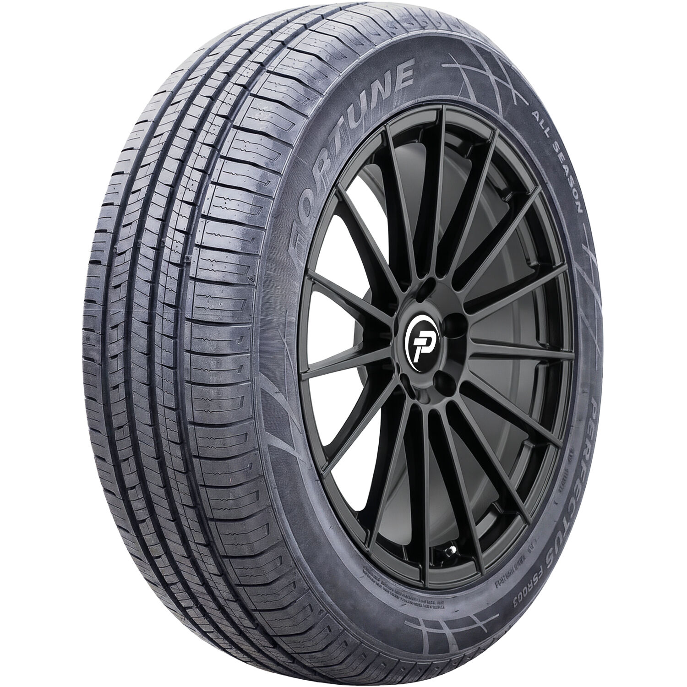

FORTUNE PERFECTUS FSR602 195/55R15

RM 149.00
The Fortune Perfectus FSR602 is a high-performance touring tyre designed for driving comfort, dependable grip and durability. Its asymmetrical tread pattern improves handling and cornering stability, while four wide drainage grooves reduce the risk of aquaplaning. Pattern Noise Simulation (PNS) technology minimises road noise, and the continuous rib design promotes even tread wear and longer tyre life. Key Features: • Excellent wet and dry grip • Improved braking performance • Stable handling and cornering • Quiet and comfortable ride • Long-lasting tread life • Efficient water drainage Specifications: • Load & Speed Rating: 85V • Fuel Efficiency: C • Wet Grip: B • External Noise: 71 dB • Treadwear: 600 • Traction: A • Temperature: A • Made in Thailand
Klang Hock Li Tyre Services Sdn Bhd, Klang, Selangor, Malaysia.
View live product details and enquire